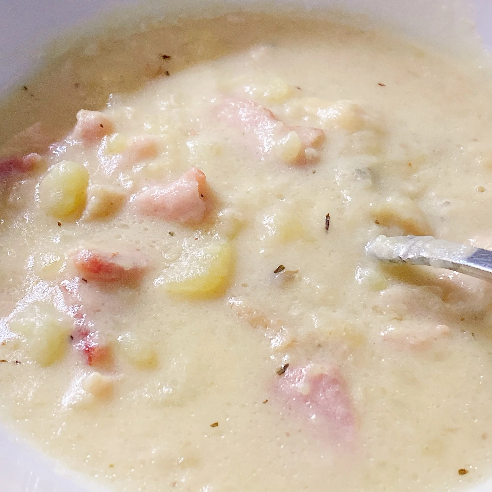

Easy Instant Pot® Clam Chowder

You won't believe this clam chowder can be made so fast in the Instant Pot®. Serve with crusty bread, if desired.
Ingredients
- 3 (6.5 ounce) cans chopped clams, undrained
- water as needed
- 4 slices bacon, chopped into 1/2-inch pieces
- 1 cup chopped onion
- 2 tablespoons butter
- 4 cups peeled and cubed Yukon Gold potatoes
- 2 tablespoons all-purpose flour
- ¼ teaspoon dried thyme
- ¼ teaspoon garlic powder
- salt and ground black pepper to taste
- 1 ⅓ cups evaporated skim milk
- 1 tablespoon potato starch (Optional)
- Drain clam juice from 2 of the cans into a 2-cup measuring cup and fill with water to the 2-cup mark; set aside. Drain and discard clam juice from the remaining can.
- Turn on a multi-functional pressure cooker (such as Instant Pot®) and select Saute function. Add bacon and stir occasionally until fat has rendered and bacon is cooked, but not crispy, about 5 minutes. Add onion and butter. Cook, stirring and scraping the bottom of the pot to get up all of the brown bits, until onion has softened and turned translucent, about 5 minutes. Hit Cancel.
- Add potatoes and reserved clam juice-water mixture; stir. Close and lock the lid and seal the pressure valve. Select high pressure according to manufacturer's instructions; set timer for 4 minutes. Allow 10 to 15 minutes for pressure to build.
- Allow to rest for 3 minutes, then release pressure carefully using the quick-release method according to manufacturer's instructions, about 5 minutes. Unlock and remove the lid.
- Carefully mash some or all of the potatoes as desired with a potato masher. Select Soup function. Stir in flour, thyme, garlic powder, salt, and pepper. Add evaporated milk and drained clams. Heat the soup without boiling, about 5 minutes. Add potato starch to thicken soup, if desired.
Return